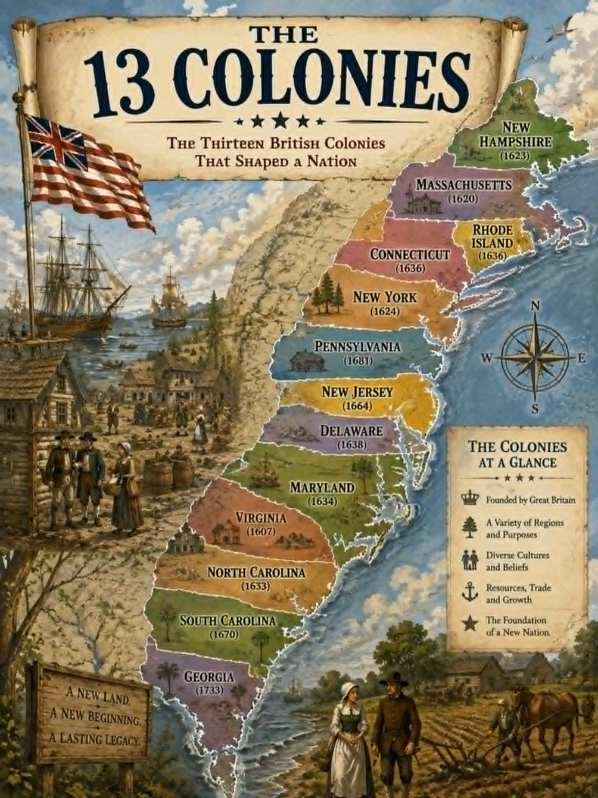

History · Grade 8 · Worksheet
Read the history, then answer in your own words. Answer key on the last page.

The thirteen colonies were never one plan. They were founded across more than a century, by different people, for reasons that had almost nothing to do with each other. Virginia was started in 1607 by a company hoping to make money. Massachusetts was settled by Puritans who wanted to worship their own way. Pennsylvania was founded by William Penn as a refuge where Quakers and others would be left alone. Georgia began partly as a place to give debtors a second chance. Calling them one country in 1700 would have puzzled everybody living in them.
Historians usually sort them into three regions, because geography pushed each one into a different way of making a living. New England, in the north, had thin rocky soil and a short growing season, so farms stayed small and families turned to the sea instead: fishing, whaling, shipbuilding and trade. The Middle Colonies had better soil and longer summers, and grew so much wheat and grain that they were nicknamed the breadbasket colonies. The Southern Colonies had rich soil and a long warm season, which suited cash crops such as tobacco, rice and indigo grown on large plantations.
Those crops needed enormous amounts of labour. At first much of it came from indentured servants, people who traded four to seven years of work for the cost of the voyage across the Atlantic. Over time the Southern Colonies came to depend instead on enslaved Africans, held for life with no term to serve out and no freedom at the end. Slavery existed in every one of the thirteen colonies, but it was the foundation of the southern plantation economy in a way it was not in the north. That difference did not go away, and it eventually helped tear the country in half.
Something else was growing at the same time. Because the colonies were three thousand miles from London and news took two months to cross the ocean, they got used to settling their own affairs. Virginia elected a House of Burgesses in 1619, the first representative assembly in English America. The Mayflower Compact of 1620 had the settlers agree among themselves how they would be governed. Town meetings ran New England villages. By the middle of the 1700s nearly every colony had an elected assembly that controlled its own taxes and spending.
So by 1750 there were about two million colonists who thought of themselves as British subjects, living under a king across an ocean, while quietly running their own governments in practice. That worked for as long as Britain left them to it. When Parliament decided after 1763 to govern the colonies more closely and tax them directly, it was not introducing government to people who had none. It was taking something back from people who had grown used to having it.
“And hath made of one blood all nations of men for to dwell on all the face of the earth, and hath determined the times before appointed, and the bounds of their habitation.”
Acts 17:26
Thirteen settlements founded a century apart, by people who wanted different things and mostly ignored each other, became one country. Nobody planned that. The same passage also says every nation is of one blood — which is worth holding beside a chapter in which some of those colonists were building an economy on people they had bought.
Before you answer. Four of these five are hiding in the reading. Find the sentence that answers each one and write its question number in the margin beside it, then answer from the sentence you found. Question 2 is a vocabulary word, so check the word list instead.
Vocabulary. colony A settlement ruled by a country somewhere else. cash crop A crop grown to sell for money rather than to feed the family growing it. indentured servant Someone who agreed to work for a set number of years in exchange for the cost of the voyage. plantation A large farm growing one main crop, worked by many labourers. assembly A group of elected representatives who make laws and decide taxes. self-government People governing themselves through their own elected representatives.
Five Questions. Accept answers in the student's own words that carry the sense below. The place each answer comes from is noted, so you can check it was found rather than guessed.